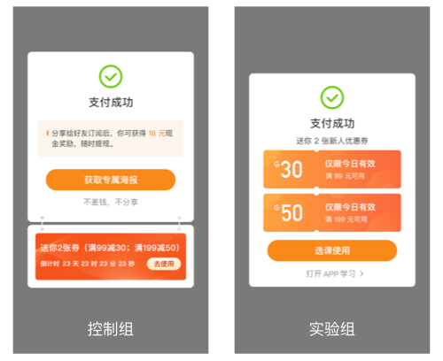
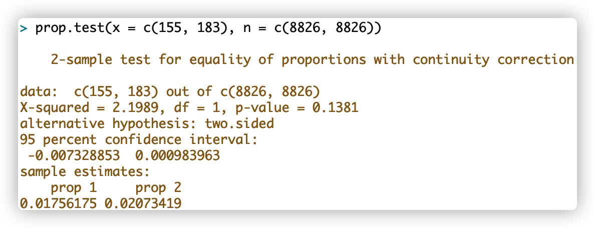
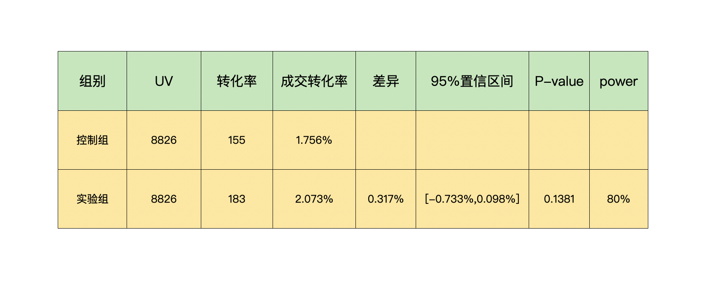
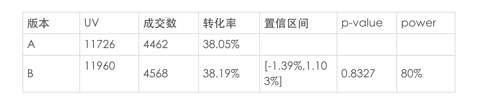

- 00 开篇词 用好A_B测试，你得这么学.md.html
- 01 统计基础（上）：系统掌握指标的统计属性.md.html
- 02 统计基础（下）：深入理解A_B测试中的假设检验.md.html
- 04 确定指标：指标这么多，到底如何来选择？.md.html
- 05 选取实验单位：什么样的实验单位是合适的？.md.html
- 06 选择实验样本量：样本量越多越好吗？.md.html
- 07 分析测试结果：你得到的测试结果真的靠谱吗？.md.html
- 08 案例串讲：从0开始，搭建一个规范的A_B测试框架.md.html
- 09 测试结果不显著，要怎么改善？.md.html
- 10 常见误区及解决方法（上）：多重检验问题和学习效应.md.html
- 11 常见误区及解决方法（下）：辛普森悖论和实验组_对照组的独立性.md.html
- 12 什么情况下不适合做A_B测试？.md.html
- 13 融会贯通：A_B测试面试必知必会（上）.md.html
- 14 举一反三：A_B测试面试必知必会（下）.md.html
- 15 用R_Shiny，教你制作一个样本量计算器.md.html
- 加餐 试验意识改变决策模式，推动业务增长.md.html
- 导读 科学、规范的A_B测试流程，是什么样的？.md.html
- 结束语 实践是检验真理的唯一标准.md.html
- 捐赠
加餐 试验意识改变决策模式，推动业务增长
你好，我是凯悦。很荣幸能为博伟老师的专栏写篇加餐，写这篇文章，一方面跟我学习A/B测试的经历有关。另一方面，作为极客时间的产品经理，我们团队的试验意识也经历了一个从0到1的过程。
一年半前我开始自学A/B测试，当时在网上找了很多文章和课程来学习。但有用的资料较少，质量也参差不齐，讲得也不够透彻，所以我花了很长时间来判断资料的正确与否，也因此踩了很多坑。
所以在博伟老师这个专栏上线之后，我每周追更，越是往后学习兴趣越浓，心想如果在我学习初期就遇到这个专栏，那是多美好的事。
这篇加餐中，我把我们团队从引入、应用A/B测试到建立起试验意识的整个过程分享给正在学习的你。
试验意识改变决策模式，推动业务增长
极客时间不是从产品初期就开始使用A/B测试的，而是经历了纠偏、引入、应用、总结四个阶段，最终形成了较强的试验意识。
- 纠偏：改变对A/B测试的错误认识，建立正确认识。
- 引入：将A/B测试的方法和工具引入到决策过程中，而非拍脑袋决定。
- 应用：用A/B测试解决一个个实际问题。
- 总结：复盘经验，形成试验意识。
经历了四个阶段的发展，我们建立了完整的试验流程，形成了试验意识，关键点有两个：
- 每当遇到产品决策问题时，第一时间想到A/B测试。
- 长期坚持使用A/B测试。
这里我着重想说明一下我们在试验意识上的纠偏。正是意识上的纠偏，让我们改变了决策模式，将依据经验决策的单一决策模式切换为依据经验+试验意识的系统决策模式，持续推动业务增长。
意识纠偏
曾经以为A/B测试就是设置两个版本，分别让两组用户使用，转化率高的胜出，然后就可以发布上线了。
但事实真是如此吗？这样做决策科学吗？如果A/B测试如此简单，那为什么还是有很多互联网公司没有使用呢？
先举个例子，一个详情页版本A转化率是1.76%，版本B转化率是2.07%。如果你是产品经理你会选用哪个版本呢？
假如再有版本C，转化率是2.76%呢？再有版本D，转化率是11.76%呢？
按照“哪个版本转化率高就上线哪个版本”的决策模式，我们应该立即上线版本D。过去我也是这么认为的，但实际上是错误地理解了A/B测试。
在我刚才举的例子中，存在三个问题：
- 第一，试验只是抽取了一部分用户得出了结论，不是全部用户；那么当全部用户都使用版本D时，转化率还会是11.76%吗？
- 第二，版本B、C和D的转化率分别是2.07%、2.76%和11.76%，相对于版本A的提升分别是0.31%、1%和10%。是差异越大，我们上线这个版本的信心指数就会越高吗？显然不是，还需要考虑，0.31%、1%和10%的提升是实际存在的，还是试验误差导致的？
- 第三，当差异多大时，我们才能下判断呢？换句话说，如果上线版本B，它是否确实能带来转化率的提升呢？实际的提升会是多少呢？
由于这三个问题缺少数据支持，所以无法回答，因此就没法做出是上线版本A还是上线版本B的决策。我们还需要收集更多的信息来回答这三个问题。
回答这三个问题，就涉及对科学A/B测试的理解。什么是科学、规范的A/B测试呢？博伟老师的专栏已经给出了答案。A/B测试并没有想象中的简单，它是一项科学试验，涉及到抽样、显著性检验、软件工程、心理学等方方面面。重点要关注试验过程是否科学严谨，试验结果是否可信，依据这样的A/B测试结果做决策才真正的能推动业务的发展。
引入A/B测试
为什么要引入A/B测试呢？极客时间用户早已破百万，需要实现从野蛮生长到精耕细作的阶段跨越，用户增长、数据决策都离不开A/B测试这个工具。它能够在不进行较大改变的情况下使用小部分流量进行试验，验证假设得出结论，达到优化产品、促进用户留存和活跃的目的。
引入过程中我们采取了三方面的行动。
第一，系统学习A/B测试。开始学习时，找了大量的资料，量虽然多但大部分千篇一律。不过经过不断的学习，我们还是总结出了自己的试验流程，并尝试应用。当然，中间也踩了很多坑，进入了不少误区。
所以当编辑同学策划《A/B测试从0到1》这个专栏时，我们就发现这个专栏非常实用，初学者或进阶者学习过程中遇到的问题，不清楚的细节，以及需要避免的“坑”，博伟老师都有详细的讲解。
第二，自建分流系统。学习了理论知识之后，就要给研发同学提需求做工具了。我们自建了分流系统，然后将整个A/B测试流程跑通，这样才能真正地帮助到决策者做判断。
第三，将A/B测试纳入产品迭代的流程。现在在做重要产品的迭代前，都会做多个版本进行A/B测试，这已经成为了团队的共识。
引入并建立了A/B测试观念和意识后，接下来就需要动手实践了。博伟老师在专栏中也多次讲过，A/B测试的实践性非常强，需要在实际业务场景中不断迭代、精进。下面我就通过两个实际案例，来看看极客时间是如何从0到1利用A/B测试验证假设，以及进行产品迭代的。
A/B测试实践应用
极客时间有多个重要业务指标，其中转化率和复购率两项指标尤为重要。所以我就选择了具有代表性的两个案例来讲解。案例一，我们通过A/B测试检验了一个提升复购率的假设。案例二，利用A/B测试选出高转化率的详情页。两个案例都说明了试验和试验意识的必要性。
案例一：醒目的优惠券样式可以提高复购率吗？
案例背景
运营同学想提高完成首单用户的复购率，于是提出想法：在用户完成首单后，让优惠券的展示更加醒目，以促进用户使用。但是这个想法却不被产品经理认可。主要有以下几方面的原因：
- 首先，现有版本已经有了优惠券展示模块。
- 其次，整体优惠券使用率不高，而且分析历史数据得知优惠券对促进用户再次购买的效果并不理想。
- 最后，也是最重要的一点，现有版本有“分享有赏”功能，用户将课程以海报形式分享到朋友圈，其好友通过该海报购买后，该用户能够得到返现。通过这种形式也能促成复购，还有拉新效果。
运营同学和产品经理各有理由，所以在双方互相不能说服的情况下，我们就决定用 A/B测试来解决这一问题，而试验结果也让大家颇感意外。
试验设计
现有方案是用户完成首单后，系统弹出弹窗，用户可以选择使用优惠券购课或者分享给其他用户获得现金奖励。运营同学提出假设，认为以更醒目的样式展示大额优惠券可以提高复购率，试验的假设就可以表述为“醒目的优惠券能促进用户立即使用优惠券，进而增加复购的概率”。
这里需要说明的是，用户完成首单后，系统会自动将优惠券发送给用户，不需要用户手动领取。
于是产生了实验组的UI样式：

接下来就是按照A/B测试的规范流程来设计试验了：
- 明确目标和假设。目标是增加复购，零假设是实验组复购率与控制组没有差异。
- 确定指标。用复购率作为衡量指标，同时考虑新用户数和营收。（复购率=已支付订单数大于等于两单的用户数/已支付订单数等于一单的用户数）
- 确定试验单位。使用uid作为试验单位。
- 确定样本量。我们将实验组与控制组的差值设置为0.6%。这个差值也有其他叫法，比如最小可检测效应、实际显著性。算出来最少需要8074个样本。
实施测试
经过对历史数据的分析，用户分享率和领取优惠券的领取率没有明显的周期性变化，因此按照样本量与流量确定了试验时长。
做好准备后，开发同学开始使用自建的分流系统，上线测试。
结果分析
进入试验的用户有17652人，在功效80%，置信度95%时，置信区间不收敛，并且P值大于0.05，不拒绝原假设。我们又试验了一段时间，发现依然如此。因此判断实验组并不比原版本效果好。
使用R语言的prop.test函数计算结果如下图：- 
试验结果汇总如下表所示：-
-
试验过程中我们还收集了另外两个指标：-
 -
通过辅助指标，我们发现原版本能带来更多的用户，且用户更有动力分享促进用户购买。并且经过分析，排除了“大部分新用户是由少数几个老用户的分享带来的”这种情况。
-
通过辅助指标，我们发现原版本能带来更多的用户，且用户更有动力分享促进用户购买。并且经过分析，排除了“大部分新用户是由少数几个老用户的分享带来的”这种情况。
做出决策
从试验数据来看，置信区间包含“0”值，意味着实验组比控制组的转化率有可能增加0.098%，也有可能降低0.733%。
此外，在拉新能力上，原版本是实验组的5倍；成交金额上，前者是后者的3.6倍。差别之大令我们感到意外，幸好有试验的意识，先通过A/B测试对idea做了检验，如果拍脑袋决策，直接采纳这个建议，那会给公司带来损失。
基于以上两个原因我们决定继续使用原版本。
案例思考
该案例中采取了“大胆假设，小心求证”的决策方式，当提出了“通过醒目的优惠券设计刺激复购”的idea时，产品经理第一时间想到用A/B测试的方法来验证想法是否可行。既不臆断拒绝，也不盲目接受。而是试验意识驱动，采用A/B测试方法，收集数据，分析数据，科学决策。这也就是我在文章开头所说的试验意识的第一个关键点，当涉及产品变化的决策时，首先想到A/B测试。
案例二：选出高转化率的详情页
有了前车之鉴，我们在产品迭代时也开始养成肌肉记忆，不断使用A/B测试。
案例背景
APP的课程详情页需要版本迭代。产品经理思考，通过强化促销价格能否提升详情页的转化率？
试验设计
设计了两种UI样式，如下图：-
- 确定指标。用转化率作为衡量指标。
- 确定试验单位。使用uid作为试验单位。
- 确定样本量。我们将实验组与控制组的差值设置为1.5%，计算后大概需要样本量1.7万。因为我们流量较大，按照原定分流计划，1-2天的时间就能达到最小样本量。由于用户在周末活跃数据会骤降，为了覆盖一个用户活跃周期，同时为了尽量避免新奇效应，我们适量缩小试验流量占总流量的比例，将试验时长设置为一周。
- 实施测试。做好准备后，开发同学上线测试。
结果分析
为避免“学习效应”，上线试验后，我们持续监测每天的指标；各项指标的变化都很稳定，符合预期，排除了“学习效应”。
试验结果如下：
- 进入试验的用户有23686人，在功效80%，置信度95%时，置信区间不收敛，p值大于0.05不拒绝原假设，两个版本没有显著差异。
此时，陷入僵局，试验结果不显著，增加样本量降低方差都没有改变结果。如何决策呢？
做出决策
由于置信区间不收敛，无法根据试验结果决定使用哪个版本。因此需要考虑其他因素做决策。APP整体风格简洁明快，没有大色块设计；而且醒目的“大色块”并没有带来转化率的提升，却将页面分割成上下两个部分。
基于UI样式的考虑，我们决定使用版本A。
案例思考
试验结果有时会与直觉相左。通过严格试验得出的数据能有效反应用户的真实情况，数据驱动的前提是有数据，有数据的前提是有意识的做试验并收集数据。
很多试验的结果并不能给出明确的决策依据，也需要产品经理主观决策，这并不意味着试验没有作用，试验的作用是将能够用试验验证错误的idea全部排除，且证据充分，将无法用试验解决的问题交给“专家系统”来决策权，即依据负责人或团队的经验决策。
总结
今天的核心内容到这里就讲完了，我总结了团队在优化决策模式、推动业务增长过程中积攒的一些经验。
A/B测试方法是经过验证的最佳实践（Best Practice），要将试验意识写入我们的心智模式，每当遇到增长问题、决策问题时第一时间想到“A/B测试可能是一个好的解决方法”，这是试验意识的第一个关键点。
试验意识的第二个关键点是，A/B测试需要长期坚持，要形成循环，而不仅仅是闭环。如果说从发现问题到试验结果上线，再到效果回归是一个闭环的话，那么还需要在发现问题前加一个动词“持续”，“持续发现问题”，这就让试验意识形成了循环，在循环中形成持续向上的趋势。这个意识的重要性不在于一次两次试验有效还是无效，而是能让我们在决策前先用试验验证并长期这样做，形成习惯。
试验意识的建立，让我们的决策模式不再局限于依赖经验和直觉。试验意识加经验的决策模式成为我们的决策系统，由于这个系统有概率优势，虽然单次决策有时有效有时无效，但长期来看每一次微小进步的叠加效果就能驱动业务的整体增长，而其中的经验必将带来惊艳的效果。
© 2019 - 2023 Liangliang Lee. Powered by gin and hexo-theme-book.